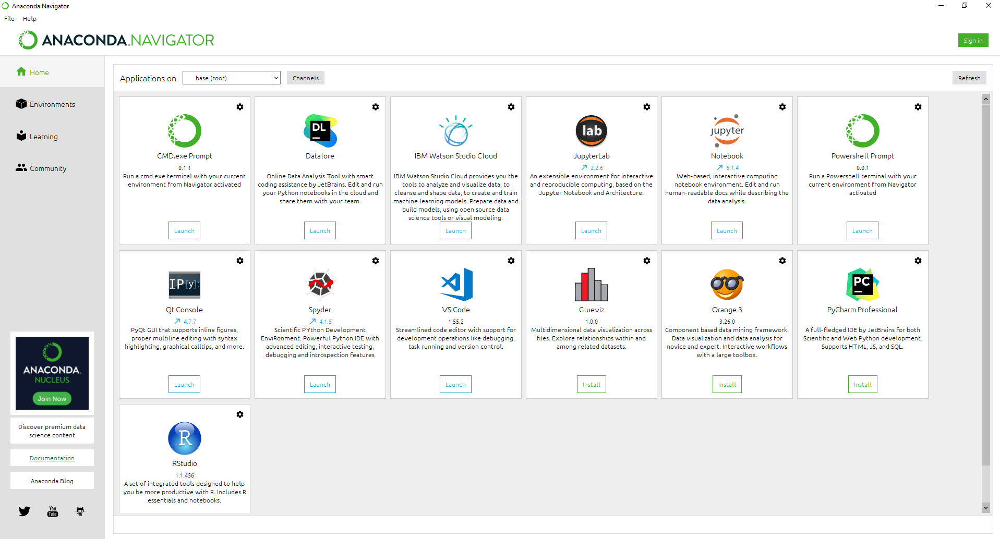
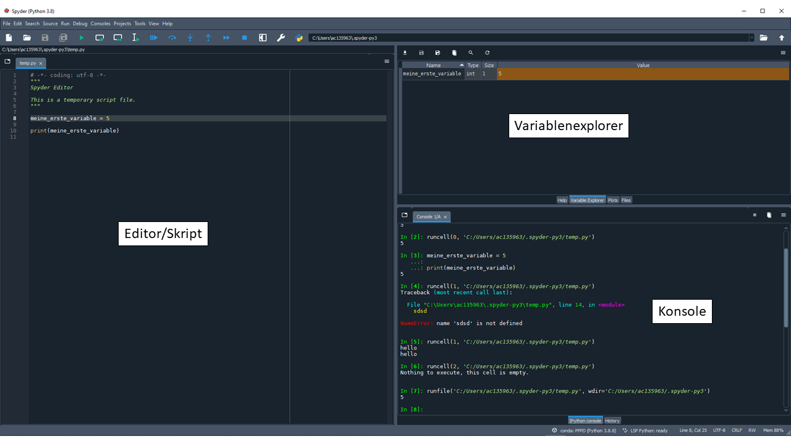

Verwendete Software¶
Python¶
Wir nutzen im Kurs die Programmiersprache Python. Python ist eine professionelle und universell einsetzbare Programmiersprache, die momentan zu den populärsten Programmiersprachen weltweit zählt. Zur offiziellen Website von Python geht es hier.
Wir benutzen Python in diesem Seminar aus folgenden Gründen:
Python ist im Vergleich zu anderen Programmiersprachen relativ einfach zu lernen und besitzt eine gut lesbare Syntax .
Python setzt die sogenannte Objektorientierte Programmierung (kurz: OOP) sehr gut um. Das ist nützlich, da wir einen Agenten später als ein selbstdefiniertes Software-Objekt mit gewissen Eigenschaften umsetzen werden.
Mit Python als professioneller Programmiersprache ist man im Vergleich zu NetLogo, einer extra für die Einführung in ABM entworfene Programmiersprache, deutlich mächtiger und flexibler in der Programmierung von ABM.
Mit Python könnt ihr nicht nur ABM programmieren, sondern verfügt über eine sowohl in der Wissenschaft als auch in sonstigen Arbeitsfeldern universal einsetzbare und äußerst gefragte Kompetenz.
Python ist zur Zeit extrem populär und verfügt über eine sehr aktive Community. Dadurch findet man durch eine Google-Suche (auf Englisch) zu fast jedem Problem mit Python eine Lösung.
Nachteile von Python für die Entwicklung von ABM:
Anders als z.B. Netlogo wurde Python nicht speziell für die Programmierung von ABM entwickelt. Das macht den Einstieg in die Programmierung von ABM etwas schwerer, zahlt sich langfristig aber aus.
Während beispeilsweise in NetLogo die graphische Darstellung nicht selbst programmiert werden muss, müssen wir dies in Python selber programmieren. Aus diesem Grund werden wir in diesem Kurs nur sehr einfache Methoden der graphischen Darstellung verwenden.
Python ist im Vergleich zu anderen professionellen Programmiersprachen etwas, für uns jedoch unmerklich, langsamer.
Anaconda¶
Ich empfehle für diesen Kurs Python über Anaconda zu installieren und zu nutzen. Anaconda bündelt alle wichtigen Pakete und Programmierumgebungen wie Spyder und Jupyter Notebook, macht den Einstieg in die Programmierung mit Python etwas einfacher, hift einem aber auch langfristig all die Python-Zusatzpakete (in sogenannten virtuellen Umgebungen) zu managen.
Anaconda kann hier heruntergeladen werden.
Nach der Installation von Anaconda kann der Anaconda-Navigator geöffnet werden. Dort stehen eine Reihe von Programmen zur Auswahl, u.a. auch Spyder, welches wir in diesem Kurs zur Programmierung mit Python verwenden werden.

Spyder¶
Wir werden zunächst v.a. mit der Programmierumgebung Spyder arbeiten. Spyder ist eine Integrierte-Entwicklungs-Umgebung (integrated development environment, kurz: IDE), welche auf die wissenschaftliche Anwendung von Python spezialisiert ist. Wir können in dieser sowohl den Code unseres Programmes schreiben, unsere Daten/Variablen untersuchen, Graphiken anzeigen lassen als auch interaktiv mit Python kommunizieren. Wenn du vielleicht schonmal mit R und R-Studio gearbeitet hast: Spyder ist quasi das R-Studio für Python.
Spyder besteht aus drei zentralen Fenstern:
Editor:
Im Editor schreiben wir unser Programm bzw. unseren Code.
Wir können das dort geschriebene Programm als .py-Datei abspeichern. Wir nennen ein solches Dokument auch “Skript”.
Das gesamte Programm des aktuellen Skripts können wir ausführen, indem wir auf das grüne Dreieck am oberen Rand von Spyder drücken
Einzelne Code-Ausschnitte können u.a. ausgeführt werden, indem wir diese markieren und F9 drücken
Konsole:
In der Konsole “verbirgt” sich Python bzw. der sogenannte Python-Kernel. Vereinfacht kann man sich vorstellen, dass hier unser geschriebener Code ausgeführt wird.
Wir bekommen in der Konsole auch Feedback von Python. Hier werden beispielsweise Ergebnisse oder Fehlermeldungen eines Programmes angezeigt.
In die Konsole können wir auch direkt Code eintippen, mit Enter bestätigen und wir bekommen unmittelbar das Ergebnis angezeigt. Die Konsole kann also auch für eine “interaktive” Benutzung von Python, beispielsweise wie bei einem Taschenrechner, verwendet werden.
Variablenexplorer:
Im Variablenmanager bekommen wir die Werte von Variablen bzw. Software-Objekten angezeigt.
Sehr hilfreich, um zu prüfen, inwiefern das Programm richtig läuft und um den Überblick zu behalten.
